读完《超越百岁》，让你更有把握活到一百岁！
第一次用一篇文章的篇幅去介绍一本书，虽然可能最终也就是 800-1000 字，刚刚达到高考作文的字数要求，不过又不是考试没人打分，跟着感觉走就对咯。
- 为什么推荐《超越百岁》这本书？

1️⃣ 书名吸引力拉满
平均寿命一直在增长，活到一百岁的可能性只会越来越高
2️⃣ 对不少医学常识与概念都有做细致的科普
糖尿病、癌症、老年痴呆等等
3️⃣ 作者给予的实践方案实操性强
关于稳定性练习的内容甚至提供了完整的视频演示
2. 关于作者，有哪些信息值得关注？
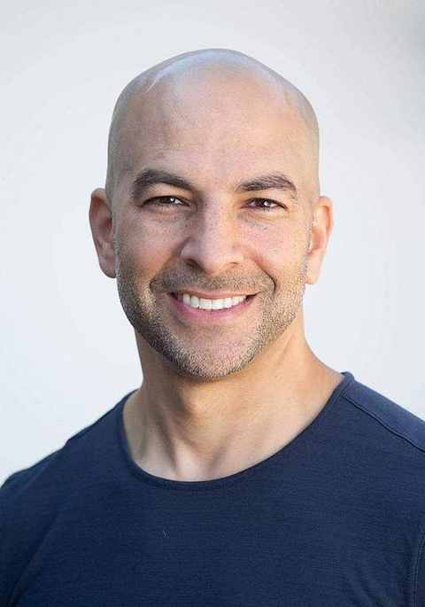
1️⃣ 是医学博士、健康专家
斯坦福大学医学博士，著名健康专家，长寿应用科学医疗研究机构Attia Medical创始人
2️⃣ 是运动健将
在自行车运动、马拉松游泳、力量训练中一直保持高水平的表现。
3️⃣ 是斜杠青年
离开医院后加入麦肯锡，后又回到健康行业， 长期主持一个热门的大众播客The Drive
4️⃣ 曾抑郁一段时间
通过不断的做心理咨询和主动去调整心态，心态越来越好，抑郁情况有极大改善，本书的最后一章就是以他的亲身经历作为案例，聊精神健康的重要性。
3. 建议的阅读方式？
以作者自序及目录为主要参考。
1️⃣ 如果时间充足
不妨就从序言开始看，看到最后一页
2️⃣ 如果想高效阅读
优先看第三部分，主要讲如何去实践才能更利于长寿目标的达成。
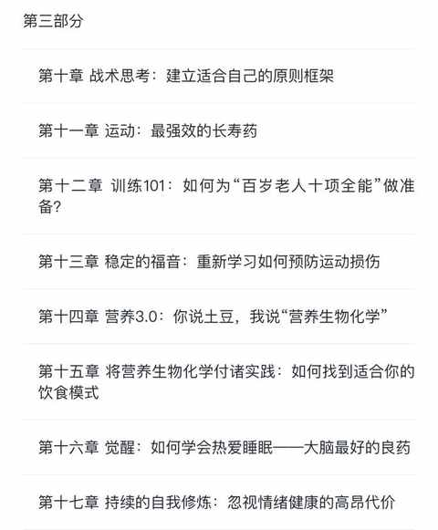
第一部分和第二部分根据需要去阅读即可，很有可能看着看着就慢慢看完了所有内容。
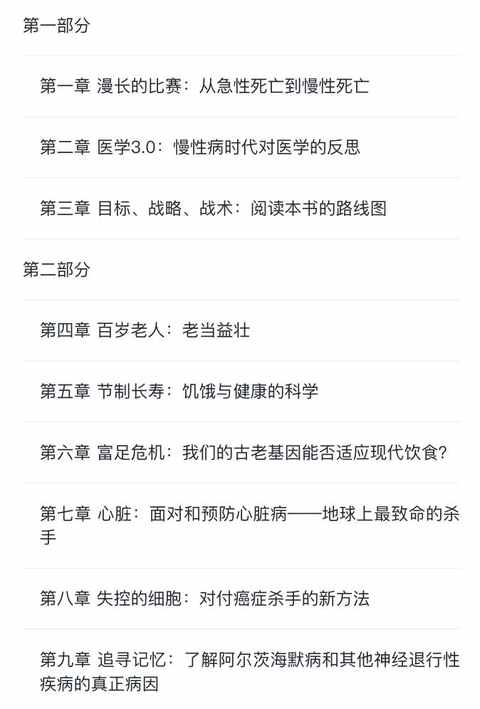
4. 书中有提到哪些有启发的观点与概念？
1️⃣ 医学 3.0
预防大于治疗，任何时候都要做到防患于未然， 第一部分的第二章有完整阐述
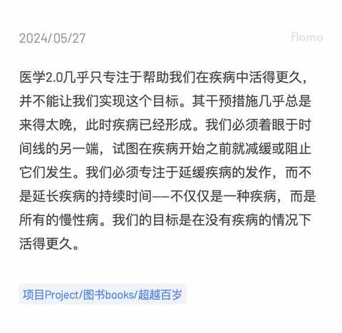
2️⃣ 相较长寿的年龄，要更在意健康寿命
力求让健康寿命占年龄的比例无限趋近于 100%
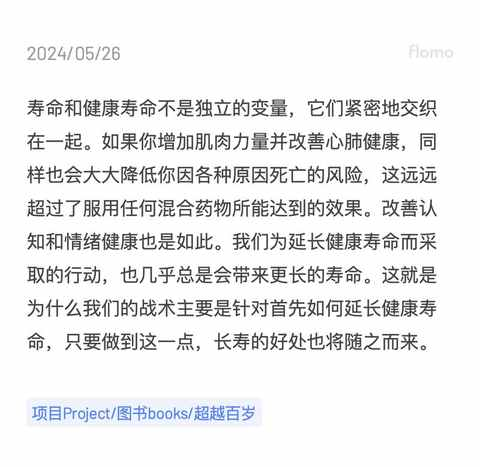
在书中作者是提到朋友母亲的情况：在其生命最后的 6-7 年都是需要人陪护的状态。
3️⃣ 与风险共存
再细致也无法规避所有风险，要根据自身情况去做权衡。
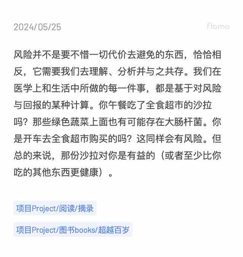
4️⃣ 改变行为能改变情绪
行为与情绪能相互影响
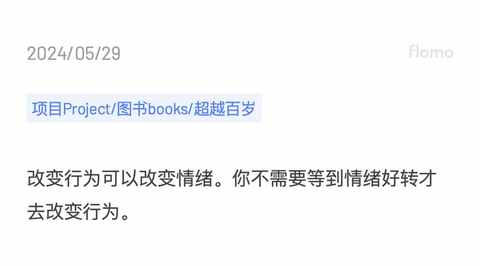
5️⃣ 运动能延长寿命
所有人都知道运动挺好的，但最难的还是坚持。
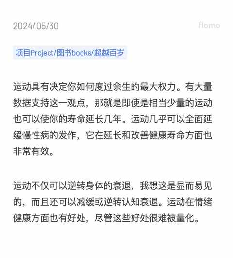
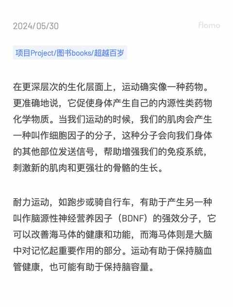
6️⃣ 最大摄氧量能衡量身体能力
要测量该数据需要借助运动手表之类的可穿戴设备。
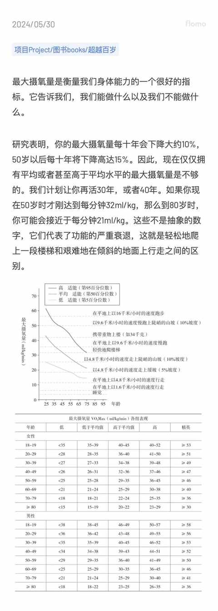
7️⃣ 要认清个体差异
个体差异是始终存在且不可逾越的，例如：每个人都有几个朋友怎么吃都不胖。
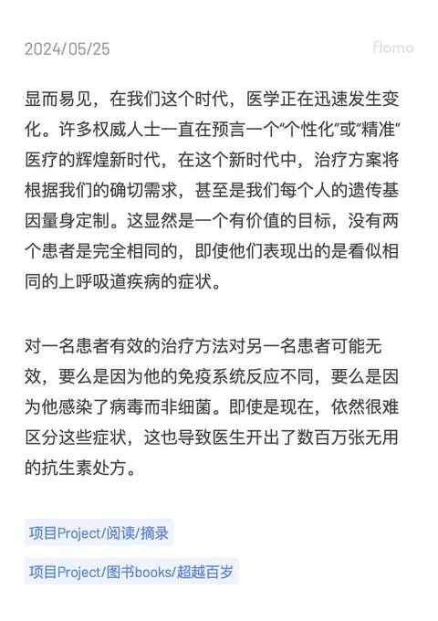
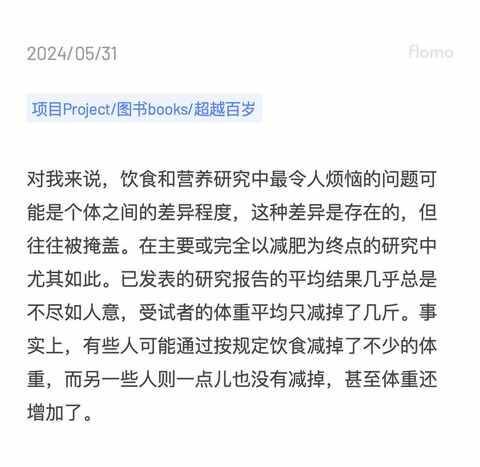
5. 看完这本书就能长寿吗？
显然是不能的。
但这本书给到了一些指引，让我们可以根据指引去为长寿做准备，至少这个是我们期待的事情。
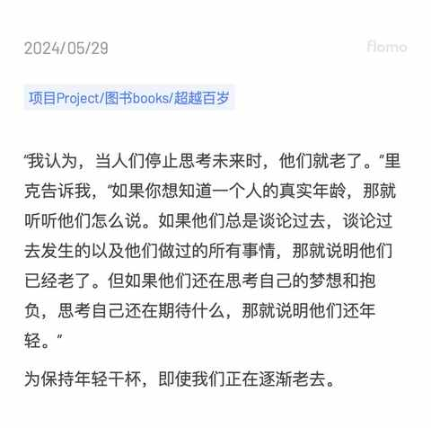